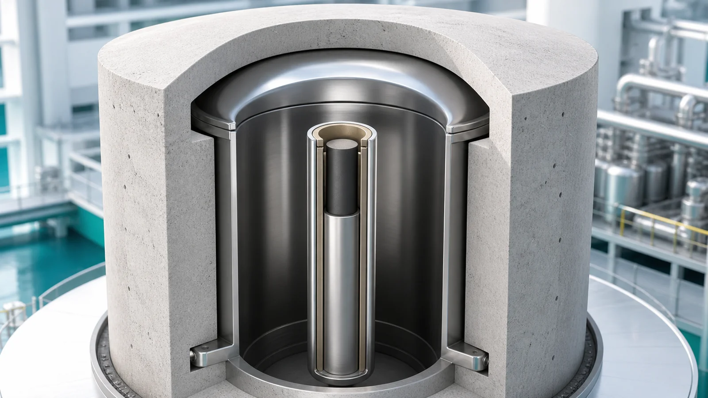
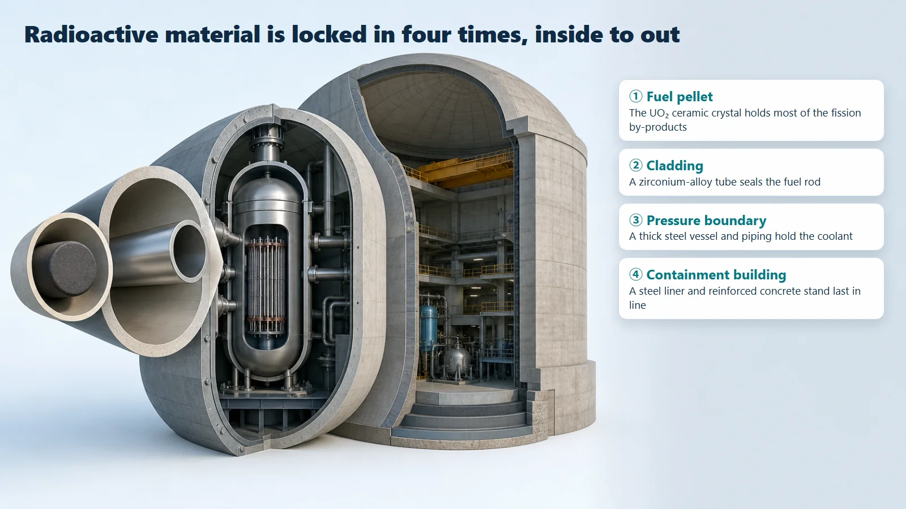
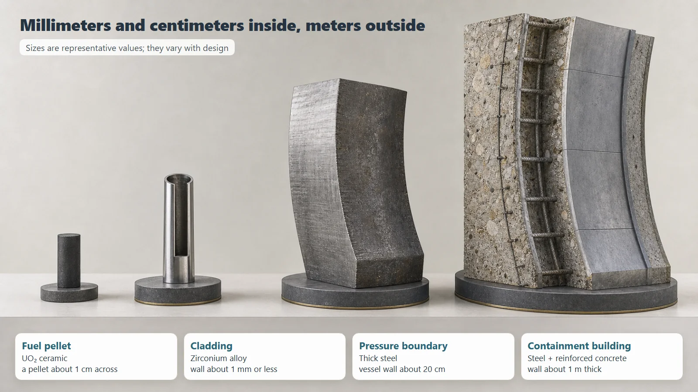

Safety Principles & Accident Analysis · 203
Never Trust a Single Bandage — Multiple Barriers That Lock Radioactive Material In, Layer by Layer
Like a hospital isolation ward, a nuclear plant surrounds radioactive material with several walls of different kinds, so that if one loosens the next one still holds.

Multiple barriers are several physical walls of different kinds, stacked from the inside out, so that radioactive material created by fission cannot leak into the environment. In a light-water reactor they are usually described as four layers: the fuel pellet, the cladding, the reactor coolant pressure boundary and the containment building. Because the walls differ in material and principle, if one is breached the others still hold independently.
Imagine a hospital caring for a patient with a particularly tricky infection. The team never relies on one measure: a mask on the patient, a sealed room, an anteroom (airlock) in front of it, and the whole ward managed as an isolation zone. If the mask slips, the sealed door stops what gets past; if the door opens for a moment, the anteroom acts as a buffer. A nuclear power plant handles radioactive material in a remarkably similar way.
So what are multiple barriers?
They are several physical walls of different kinds, stacked one around another. Two points matter. First, there is not one wall but several. Second, the walls are made of different materials and work on different principles, so if one layer is breached the rest still hold independently. The key is not "the wall is thick" but "there are several walls, and they differ from each other."

Inside to outside: the four layers
1. Fuel pellet. Fission happens inside a ceramic pellet smaller than your little fingernail, made by firing uranium dioxide until it is hard. A large share of the radioactive by-products of fission stay trapped in its ceramic crystal structure. In the hospital analogy, it is the patient's mask, catching things right at the source.
2. Cladding. The pellets are stacked inside a long, thin zirconium-alloy tube sealed at both ends. Even gaseous by-products that escape from the pellets stay trapped inside. That's the sealed room door.
3. Reactor coolant pressure boundary. The fuel rod bundles sit inside a thick steel reactor vessel and its connected piping. This sealed system, holding the coolant and the radioactive material in it, is the anteroom.
4. Containment building. A large building of steel plate and reinforced concrete around a meter thick wraps around everything. Even if something got past every inner wall, this final wall stands in its way before the outside environment.
| Barrier | Material | Representative size | Hospital analogy |
|---|---|---|---|
| Fuel pellet | UO₂ ceramic | about 1 cm across | Patient's mask |
| Cladding | Zirconium alloy | wall about 1 mm or less | Sealed room |
| Pressure boundary | Thick steel | vessel wall about 20 cm | Anteroom |
| Containment building | Steel liner + reinforced concrete | wall about 1 m | Isolation ward |

Depending on how you count, these walls are listed as three to five layers. What matters is not the exact number but the idea of stacking several layers.
Why bother with several layers?
Why not just make one wall extremely strong? The answer is independence. The four walls differ in material, principle and location, so whatever damaged one wall can hardly bring down the others at the same time. If the chance that one wall is breached is small, the chance that independent walls are all breached at once is the product of those small values, much smaller still. No single wall is perfect, but together they are far sturdier.
Two easily confused terms
Defense in depth is a much broader safety strategy, running from prevention and early detection to shutdown, cooling and emergency response. Multiple barriers are one part of it: the part that physically locks radioactive material in.
Redundancy means having several devices that do the same job, such as a spare identical pump. Multiple barriers stack walls that are different in kind. One is "several of the same thing," the other "several layers of different things."
Today's takeaways
- Multiple barriers are physical walls of different kinds, stacked from the inside out to keep radioactive material from reaching the environment.
- In light-water reactors: fuel pellet → cladding → reactor coolant pressure boundary → containment building, growing in scale outward.
- The reason for several layers is independence: if one is damaged, the others keep doing their job.
- Multiple barriers are one element of defense in depth, and differ from redundancy (several identical devices).